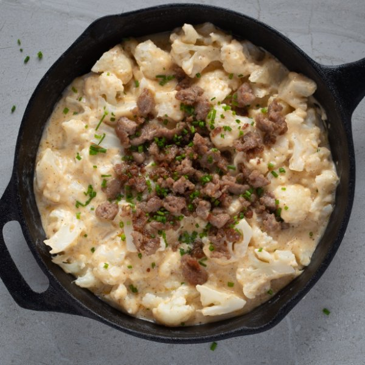

Rich Cauliflower Mac & Cheese with Sausage

Total Time
40 min
Nutrition (per serving)
700.1 kcalCalories
30.4 gProtein
11.8 gCarbs
60.2 gFat
Full nutrition table
| Calories | 700.1 kcal |
| Total fat | 60.2 g |
| Saturated fat | 33.2 g |
| Trans fat | 1.7 g |
| Cholesterol | 188.6 mg |
| Sodium | 592.5 mg |
| Carbohydrates | 11.8 g |
| Fiber | 3.3 g |
| Sugars | 5 g |
| Protein | 30.4 g |
| Potassium | 703.4 mg |
| Calcium | 284.7 mg |
| Iron | 1.8 mg |
| Vitamin A | 1410.1 IU |
| Vitamin C | 76.6 mg |
| Vitamin D | 46.3 IU |
Cookware
Ingredients
- 1 medium headcauliflower
- ½ (8 oz) blockcheddar cheese
- 1 small pkgchives
- 4 clovesgarlic
- 8 fl ozheavy whipping cream
- 4 ozParmesan cheese
- 2pork sausages
- black pepper
- butter, unsalted
- Dijon mustard
- paprika
Steps
- Wash cauliflower and cut off the leaves. Separate into small florets and cut the thick stems into smaller pieces. Transfer to a medium saucepan.1 medium head cauliflower
- Add hot water (from the tap) to the pan, so that the cauliflower is just covered. Bring to a boil over high heat. Cook until fork-tender, 4-5 minutes. Drain and set aside.
- Meanwhile, preheat a skillet over medium-high heat.
- Roughly chop the sausages.2 pork sausages
- Once the skillet is hot, add butter and swirl to coat the bottom; add the sausage. Cook, stirring often, until browned and cooked through, 5-6 minutes. Once done, transfer to a plate and reduce heat to low.2 tsp butter, unsalted
- Meanwhile, using a clean cutting board, wash, dry, and chop chives into small pieces; set aside.1 small pkg chives
- Coarsely grate cheddar. Finely grate Parmesan.½ (8 oz) block cheddar cheese
4 oz Parmesan cheese - Peel and mince garlic.4 cloves garlic
- Melt more butter in skillet. Add garlic and stir until fragrant, 1-2 minutes.2 tbsp butter, unsalted
- Stir in cream, Dijon, paprika, and pepper.8 fl oz (1 cup) heavy whipping cream
1 tsp Dijon mustard
¼ tsp paprika
¼ tsp black pepper - When the cream is warmed, add cheddar and Parmesan. Cook, stirring well, until the cheese is melted and the mixture is smooth.
- Add cauliflower to the cheese sauce and stir until well coated. Sprinkle with sausage and chives. Enjoy!